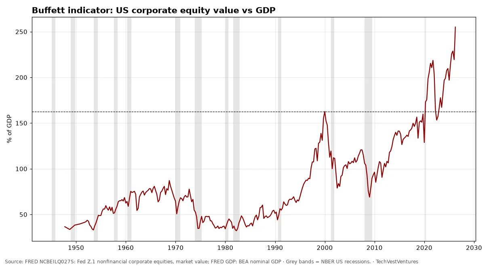
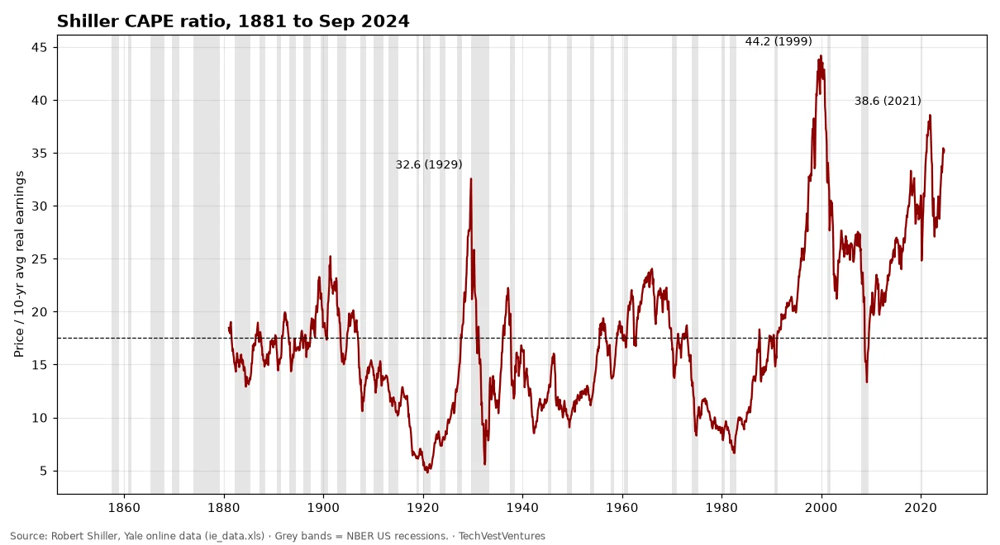
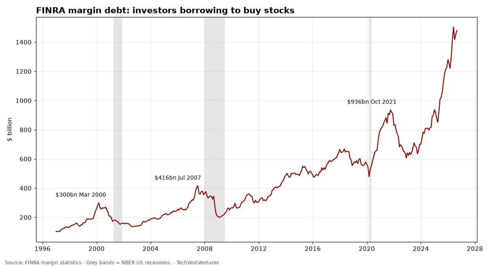
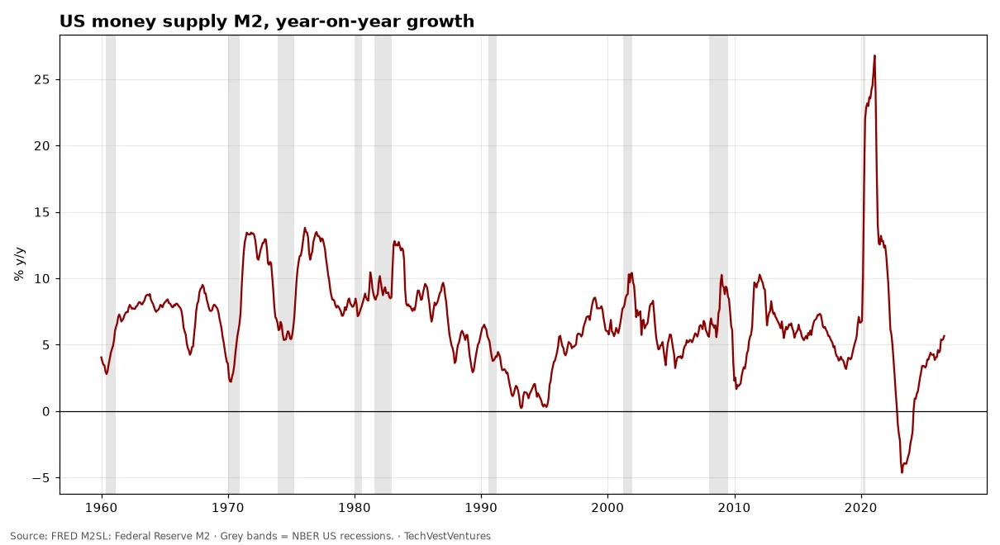
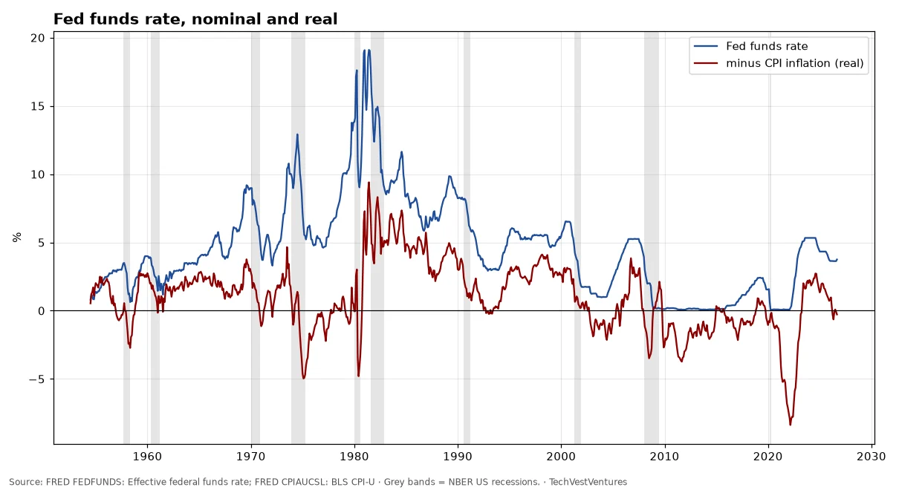
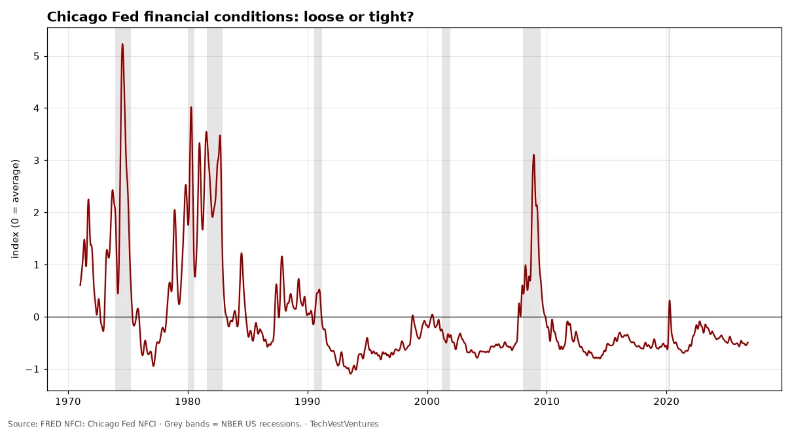
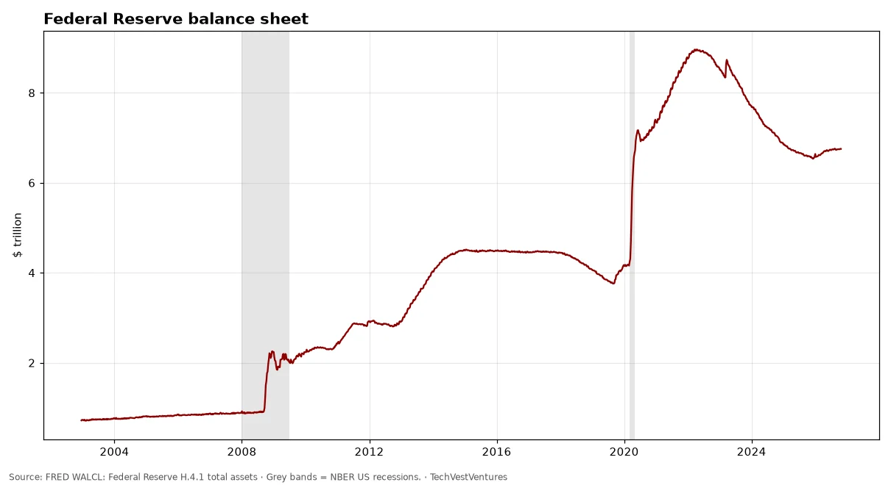

Q9. Boom Peaks

Market value of US nonfinancial corporate equities divided by GDP stood at 255% in Apr 2026 (quarter start), against 163% at the dot-com peak (Jan 2000) and a post-1945 median of 72%. Warren Buffett called this ratio 'probably the best single measure' of valuation in 2001. A high reading has preceded poor 10-year returns, but it has not timed crashes: the ratio has stayed above the 2000 peak for long stretches since 2020.
Sources: FRED NCBEILQ027S: Fed Z.1 nonfinancial corporate equities, market value FRED GDP: BEA nominal GDP

Robert Shiller's cyclically adjusted P/E for the S&P Composite. Long-run mean 17.5. Peaks: 32.6 in 1929, 44.2 in 1999, 38.6 in 2021; last value in the public file 35.2 (Sep 2024). Pattern count: only three prior readings above 30 (1929, 1997–2001, 2021) — 3 cycles, so by Michael Hentschel's rule a 'repeat' is suggestive, not proven. Note: the public Yale file we could reach ends Sep 2024.

Debit balances in customers' securities margin accounts reached $1,480bn in Sep 2026, up 31% from a year earlier. Earlier local peaks in margin debt came in March 2000, mid-2007 and late 2021, each shortly before a major market decline — three episodes in this 1997+ series, which is too few to treat as a reliable timing rule.
Sources: FINRA margin statistics

M2 grew 5.7% y/y in Aug 2026, level $23.3 trillion. The 2020–21 surge peaked at 26.8% (Feb 2021) and was followed by the first outright M2 contraction since the 1930s (low -4.6% in Apr 2023).
Sources: FRED M2SL: Federal Reserve M2

Effective fed funds rate 3.75% in Sep 2026; minus CPI inflation of 4.0% y/y gives a real rate of -0.3%. Real rates were deeply negative in 2021–22 (low -8.4% in Mar 2022, overall series low) and in the 1970s.
Sources: FRED FEDFUNDS: Effective federal funds rate FRED CPIAUCSL: BLS CPI-U

National Financial Conditions Index -0.50 on Oct 16, 2026; negative means looser than average. Stress spikes: 5.23 in Jul 1974, 3.11 in Nov 2008, 0.31 in 2020.
Sources: FRED NFCI: Chicago Fed NFCI

Fed total assets $6.75 trillion on Oct 21, 2026, down from a peak of $8.97 trillion in Apr 2022 and up from $0.72 trillion in 2002.